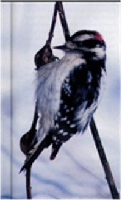

About
A brief look at the goldenrod-gallfly system:
The goldenrod gallfly is a textbook example of stabilizing selection. This insect lays offspring in the stem of a goldenrod plant, inducing a spherical stem swelling – a gall.
Left: Goldenrod gallfly (Eurosta solidaginis) ; Right: gall induced by oviposition
Gall size is an important determinant of gallfly offspring survival. During the early summer, parasitoid wasps inject eggs into the gall, which attack and kill the gallfly larva as it develops. However, the wasp’s ovipositor can reach only so far, and flies that induce big galls are safe from attack.

A gallfly predator, the parasitoid wasp, Eurytoma gigantea
Bigger is better, but biggest is not best! Downy Woodpeckers become the fly’s main threat during winter. These birds easily peck open even the biggest gall. But they ignore smaller ones, probably because they learn these contain small wasp larvae, not the larger, more rewarding fly larva.

Another gallfly predator, the Downy Woodpecker
And so, our past work shows that larvae inducing intermediate sized galls have the highest survival—stabilizing selection. At least, that’s what we find at study sites in Pennsylvania, Minnesota, and Ontario. We have also noticed that the average gall size is greater in the southern US than the Great Lakes region.

Gall size distribution example from Ontario sampling site at the Koffler Scientific Reserve
This leads us to our main question:
does optimal gall size vary from north to
south?
Leading the project:
Dr. Art Weis
Department of Ecology and Evolutionary Biology
The University of Toronto
Dr. Linyi Zhang
Department of Biology
The George Washington University

Dr. Glen Hood
Biological Sciences
Wayne State University